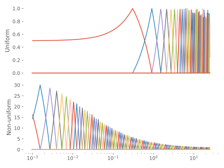

Non-uniform grids
By employing non-uniform grids, more effort can be concentrated to those parts where the function is expected to vary more, hopefully leading to a better approximation. StaggeredFiniteDifferences supports both uniform and non-uniform node distributions; in the former case, the node locations are stored as an AbstractRange, in the latter, as any other kind of AbstractVector.
Integrals
Since the quadrature weights in the non-uniform case are location-dependent, they are baked into to the expansion coefficients (as in the FE-DVR case), such that
where $f_i$ is the $i$th expansion coefficient of $f(x)$. In the uniform case, the expansion coefficients instead equal the function value at the nodes, which means
To be sure that you always get the right integration weight, use the metric to perform integrals, e.g.
is computed using
integral = sum(S*f)where the metric matrix can be found using
S = B'BSimilarly, integrals of the kind
are easily computed as
integral = dot(f, S, g)Example
We start by constructing two StaggeredFiniteDifferences grids, one uniform and one log–linear, of approximately the same extent (at least including $r=30$):
julia> N = 50
50
julia> rmax = 30.0
30.0
julia> B1 = StaggeredFiniteDifferences(rmax, N)
Staggered finite differences basis {Float64} on 0.0..30.606060606060606 with 50 points spaced by ρ = 0.6060606060606061
julia> ρmin = 0.001 # Min step-size
0.001
julia> ρmax = 1.0 # Max step-size
1.0
julia> α = 0.1 # Step-size change rate
0.1
julia> B2 = StaggeredFiniteDifferences(ρmin, ρmax, α, rmax)
Staggered finite differences basis {Float64} on 0.0..31.475628188861677 with 103 pointsAs mentioned above, the metrics are different in the uniform and non-uniform cases:
julia> S1 = B1'B1
UniformScaling{Float64}
0.6060606060606061*I
julia> S2 = B2'B2
UniformScaling{Bool}
true*IThe node locations and weights are shown in the figure below:
The basis functions become asymmetric in the non-uniform case:
julia> # Compute basis functions on a dense grid
ξ = 10.0 .^ range(-3, stop=log10(25), length=1000);
julia> χ1 = B1[ξ, :];
julia> χ2 = B2[ξ, :];
We then expand the function
on both grids and compare the error:
julia> f = x -> sin(2π*x/rmax)*exp(-4x/rmax)
#47 (generic function with 1 method)
julia> xx1 = axes(B1,1)
Inclusion(0.0..30.606060606060606)
julia> c1 = B1 \ f.(xx1);
julia> xx2 = axes(B2,1)
Inclusion(0.0..31.475628188861677)
julia> c2 = B2 \ f.(xx2);
julia> f1 = χ1*c1;
julia> f2 = χ2*c2;
julia> fe = f.(ξ);